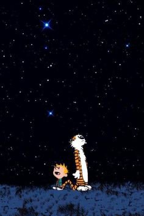

"There will always be suffering. But we must not suffer over the suffering.” – Alan Watts
Seen the news lately?
Around the world, unrest, unease, political outrage. Wars, disagreements, hatred. Fire, hurricanes, rising oceans. Animals mistreated, poisoned food, children sobbing, folks dying.
Hoo boy.
If we're paying attention, it can make any of us crazy with fury, fear, sadness.
Where’s the joy we’ve been promised? Where’s the kindness, the love? Isn't there supposed to be peace on earth? When does the lion finally lay down with the lamb?
There’s a whole lot of suffering happening on this planet.
And as we all know, suffering is wrong, bad, and not how things should be.
This is not debatable.
How weird that humans are so very sure of this.
I mean, hardship and misfortune have been on this planet since forever.
It may feel like it’s new or more intense in our times.
It’s not, though.
For millions of years, existence has provided a cornucopia of turmoil, tears, change, and upheaval, as well as peace and contentment, for our experiential enjoyment.
And for perhaps almost as long, humans have held a stop-it hand up to say, ”No. Take most of this enormous variety away. Joy and love only.”
As if we know better than existence how things should be. As if our likes and dislikes- only- should determine what happens. As if human ideas of should, shouldn’t, right, or wrong are the only possibilities.
The only proof of any of that being just more of our own opinions.
So maybe it’s time to look at things differently for a moment or two.
Not because we have to.
But because for humans to insist that suffering shouldn’t happen in this world, when existence has been clear all along that this is how things are and this is what it wants, seems… well, let’s call it “immature.”
So, what if it was possible to see from a different perspective? What if we could consider a non-human, more stepped-back point of view- like Mars maybe, or Saturn, some big distance we might try on from our usual filters, conditioning and certainties-
And then look back at earth.
Oh.
There’s nothing wrong here.
Happenings happening. No good or bad. No This-must-change. No This-feeling-is-wrong.
“Wrong” is a meaningless concept to Mars.
Earthling humans made “wrong” up.
And then, if we were willing, just for an instant, to dare to drop even the idea of the self that these things are happening to…
And tried on the possibility instead that we are the happenings themselves…
that we literally ARE each feeling, each color, each thought…
Well, where does suffering go, where does wrongness go, where does misery go,
if we ARE it?
Do we still call it “suffering” then?
Pain might suddenly be a whole different experience. Still there, perhaps, just very different.
Maybe even sweet. Maybe even loving, maybe even filled with the true nature we are convinced is our birthright.
Right there in "pain."
Already. Without seeking.
Now, I realize that may seem like a giant imaginative stretch, and of course I’m not asking anyone to believe that this could possibly be so.
And I’m certainly not saying this is easy.
After all, we are completely used to thinking we always know what’s right, that children crying is wrong, that crazy politician XYZ must go, that torture and misery is unacceptable.
Habitual ways of thinking are stubborn and truly mesmerizing.
Still, if we ARE every feeling and every thought,
we might not be in such a hurry to disappear them.
Which doesn’t at all mean we shouldn’t keep fighting political fights or putting out fires or helping animals or trying to right what we perceive as terrible wrongs here.
It’s just that we might be more effective, more clear, more peaceful in our attempts to change the happenings on planet earth,
If we’re not rage-filled and delusional with self-importance.
Because expecting existence to adjust to our preferences,
instead of the other way around,
seems fairly nuts.
And makes humans feel more significant and more solid than we may be.
Which also feels very wrong, and adds to the sense of suffering.
Thus becoming yet another wrong to right.
As if there aren’t enough of those.
When all along,
We just may BE
every bit
of horrible beauty
and every bit
of experience
Already.
Making the idea of "change" and "wrong" and "suffering"
very odd concepts indeed.
every week.
